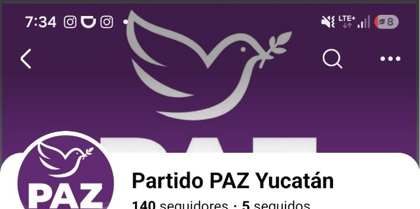
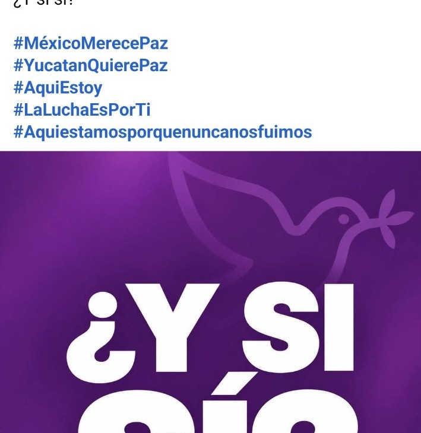
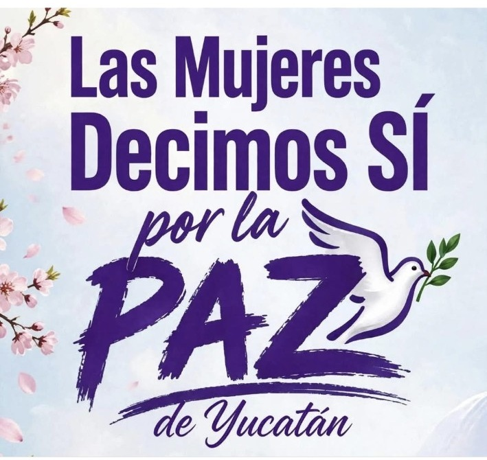
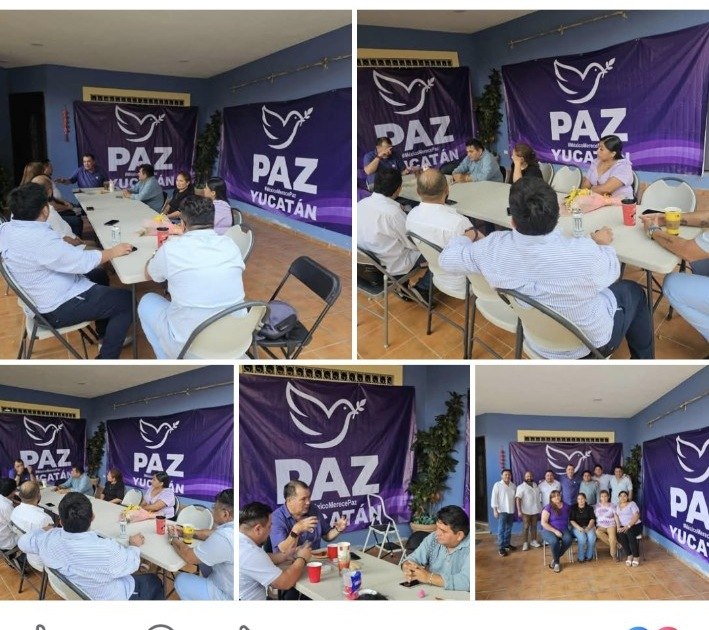

◎
Diálogo
Escuchamos, construimos y sumamos voluntades.
Creemos en un Yucatán donde la paz, la seguridad y la democracia caminen de la mano, escuchando a la ciudadanía y sumando voluntades para construir un mejor estado.

Trabajamos por un Yucatán más justo, incluyente y con oportunidades para todas y todos.
Escuchamos, construimos y sumamos voluntades.
Comunidades seguras para que las familias vivan mejor.
Una ciudadanía activa hace un Yucatán más fuerte.
Causas que nos unen por el bien común.
Sostenemos un diálogo permanente con instituciones electorales y actores de la sociedad civil, porque creemos en la construcción de acuerdos y en el respeto a las reglas.

Un espacio para mostrar reuniones, comunicados y trabajo institucional de forma profesional y accesible desde cualquier dispositivo.

Cuando una mujer levanta la voz, se abren caminos para todas. La web puede dedicar espacios completos a causas, iniciativas y participación ciudadana.
Un espacio para reuniones, posicionamientos, participación institucional y mensajes públicos de PAZ Yucatán.

Reuniones internas, diálogo y planeación también pueden tener su propia sección.

Contenido organizado con imagen, fecha, categoría y una lectura más clara.
Esta demostración está pensada como una página institucional real. Puede evolucionar con noticias administrables, formularios, eventos, representantes, documentos y un panel de gestión.